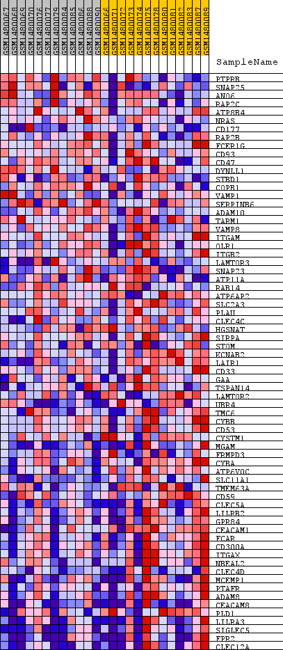
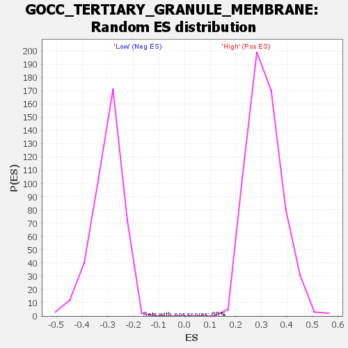

Profile of the Running ES Score & Positions of GeneSet Members on the Rank Ordered List
| Dataset | WG6v3.MRPL3.cls#High_versus_Low.MRPL3.cls#High_versus_Low_repos |
| Phenotype | MRPL3.cls#High_versus_Low_repos |
| Upregulated in class | Low |
| GeneSet | GOCC_TERTIARY_GRANULE_MEMBRANE |
| Enrichment Score (ES) | -0.62104654 |
| Normalized Enrichment Score (NES) | -2.0587823 |
| Nominal p-value | 0.0 |
| FDR q-value | 0.0069099492 |
| FWER p-Value | 0.02 |
| SYMBOL | TITLE | RANK IN GENE LIST | RANK METRIC SCORE | RUNNING ES | CORE ENRICHMENT | |
|---|---|---|---|---|---|---|
| 1 | PTPRB | PTPRB | 439 | 0.163 | 0.0128 | No |
| 2 | SNAP25 | SNAP25 | 851 | 0.115 | 0.0166 | No |
| 3 | ANO6 | ANO6 | 1506 | 0.079 | -0.0001 | No |
| 4 | RAP2C | RAP2C | 1730 | 0.070 | 0.0036 | No |
| 5 | ATP8B4 | ATP8B4 | 2914 | 0.043 | -0.0483 | No |
| 6 | NRAS | NRAS | 2936 | 0.042 | -0.0402 | No |
| 7 | CD177 | CD177 | 2959 | 0.042 | -0.0322 | No |
| 8 | RAP2B | RAP2B | 3328 | 0.037 | -0.0432 | No |
| 9 | FCER1G | FCER1G | 3509 | 0.035 | -0.0450 | No |
| 10 | CD93 | CD93 | 3529 | 0.034 | -0.0385 | No |
| 11 | CD47 | CD47 | 3983 | 0.029 | -0.0556 | No |
| 12 | DYNLL1 | DYNLL1 | 4390 | 0.025 | -0.0711 | No |
| 13 | STBD1 | STBD1 | 4465 | 0.024 | -0.0696 | No |
| 14 | COPB1 | COPB1 | 4999 | 0.020 | -0.0928 | No |
| 15 | VAMP1 | VAMP1 | 5100 | 0.019 | -0.0939 | No |
| 16 | SERPINB6 | SERPINB6 | 5193 | 0.018 | -0.0946 | No |
| 17 | ADAM10 | ADAM10 | 5464 | 0.016 | -0.1050 | No |
| 18 | TARM1 | TARM1 | 5994 | 0.013 | -0.1295 | No |
| 19 | VAMP8 | VAMP8 | 6089 | 0.013 | -0.1316 | No |
| 20 | ITGAM | ITGAM | 6312 | 0.012 | -0.1406 | No |
| 21 | OLR1 | OLR1 | 6796 | 0.009 | -0.1635 | No |
| 22 | ITGB2 | ITGB2 | 6874 | 0.009 | -0.1656 | No |
| 23 | LAMTOR3 | LAMTOR3 | 7904 | 0.005 | -0.2178 | No |
| 24 | SNAP23 | SNAP23 | 8258 | 0.003 | -0.2353 | No |
| 25 | ATP11A | ATP11A | 8515 | 0.002 | -0.2480 | No |
| 26 | RAB14 | RAB14 | 8971 | 0.001 | -0.2714 | No |
| 27 | ATP6AP2 | ATP6AP2 | 9386 | -0.001 | -0.2926 | No |
| 28 | SLC2A3 | SLC2A3 | 10865 | -0.006 | -0.3677 | No |
| 29 | PLAU | PLAU | 11541 | -0.009 | -0.4007 | No |
| 30 | CLEC4C | CLEC4C | 12029 | -0.011 | -0.4236 | No |
| 31 | HGSNAT | HGSNAT | 12352 | -0.012 | -0.4375 | No |
| 32 | SIRPA | SIRPA | 12505 | -0.013 | -0.4426 | No |
| 33 | STOM | STOM | 12969 | -0.016 | -0.4631 | No |
| 34 | KCNAB2 | KCNAB2 | 13114 | -0.016 | -0.4671 | No |
| 35 | LAIR1 | LAIR1 | 13421 | -0.018 | -0.4789 | No |
| 36 | CD33 | CD33 | 14309 | -0.024 | -0.5194 | No |
| 37 | GAA | GAA | 14747 | -0.028 | -0.5359 | No |
| 38 | TSPAN14 | TSPAN14 | 15678 | -0.037 | -0.5759 | No |
| 39 | LAMTOR2 | LAMTOR2 | 15769 | -0.038 | -0.5723 | No |
| 40 | UBR4 | UBR4 | 15770 | -0.038 | -0.5641 | No |
| 41 | TMC6 | TMC6 | 16871 | -0.053 | -0.6093 | Yes |
| 42 | CYBB | CYBB | 17099 | -0.057 | -0.6086 | Yes |
| 43 | CD53 | CD53 | 17166 | -0.059 | -0.5992 | Yes |
| 44 | CYSTM1 | CYSTM1 | 17298 | -0.061 | -0.5927 | Yes |
| 45 | MGAM | MGAM | 17517 | -0.065 | -0.5898 | Yes |
| 46 | FRMPD3 | FRMPD3 | 17596 | -0.067 | -0.5793 | Yes |
| 47 | CYBA | CYBA | 17799 | -0.072 | -0.5741 | Yes |
| 48 | ATP6V0C | ATP6V0C | 17902 | -0.075 | -0.5631 | Yes |
| 49 | SLC11A1 | SLC11A1 | 17961 | -0.077 | -0.5494 | Yes |
| 50 | TMEM63A | TMEM63A | 18063 | -0.080 | -0.5372 | Yes |
| 51 | CD59 | CD59 | 18318 | -0.089 | -0.5310 | Yes |
| 52 | CLEC5A | CLEC5A | 18401 | -0.093 | -0.5150 | Yes |
| 53 | LILRB2 | LILRB2 | 18456 | -0.096 | -0.4970 | Yes |
| 54 | GPR84 | GPR84 | 18717 | -0.111 | -0.4864 | Yes |
| 55 | CEACAM1 | CEACAM1 | 18723 | -0.111 | -0.4625 | Yes |
| 56 | FCAR | FCAR | 18740 | -0.112 | -0.4388 | Yes |
| 57 | CD300A | CD300A | 18762 | -0.114 | -0.4151 | Yes |
| 58 | ITGAX | ITGAX | 18864 | -0.122 | -0.3938 | Yes |
| 59 | NBEAL2 | NBEAL2 | 18935 | -0.128 | -0.3697 | Yes |
| 60 | CLEC4D | CLEC4D | 18949 | -0.129 | -0.3422 | Yes |
| 61 | MCEMP1 | MCEMP1 | 18998 | -0.134 | -0.3155 | Yes |
| 62 | PTAFR | PTAFR | 19010 | -0.136 | -0.2864 | Yes |
| 63 | ADAM8 | ADAM8 | 19033 | -0.138 | -0.2575 | Yes |
| 64 | CEACAM8 | CEACAM8 | 19049 | -0.141 | -0.2277 | Yes |
| 65 | PLD1 | PLD1 | 19080 | -0.145 | -0.1977 | Yes |
| 66 | LILRA3 | LILRA3 | 19303 | -0.192 | -0.1674 | Yes |
| 67 | SIGLEC5 | SIGLEC5 | 19385 | -0.230 | -0.1216 | Yes |
| 68 | FPR2 | FPR2 | 19399 | -0.244 | -0.0692 | Yes |
| 69 | CLEC12A | CLEC12A | 19421 | -0.323 | 0.0001 | Yes |

